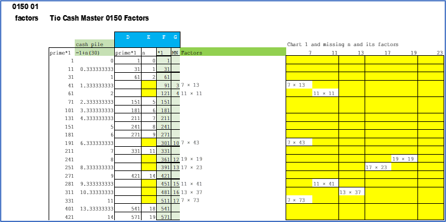
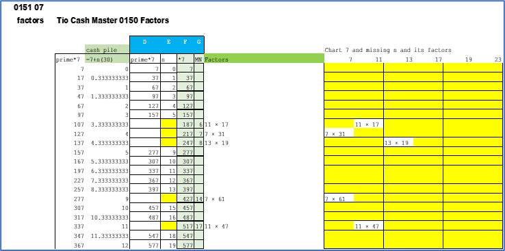
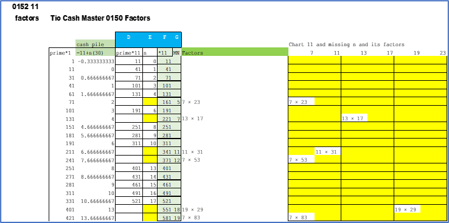
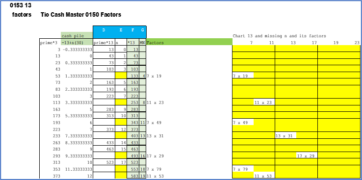
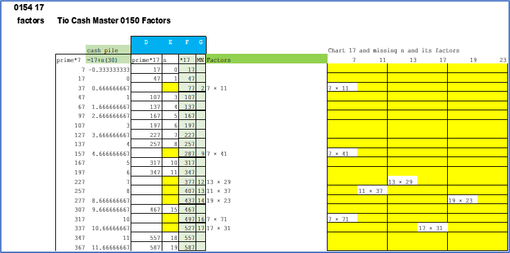
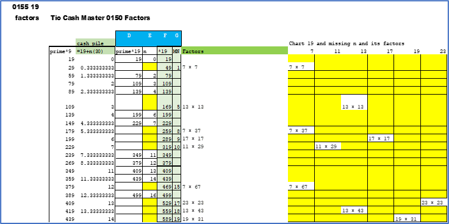
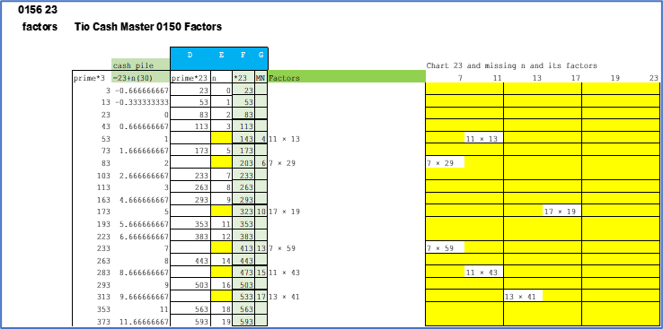
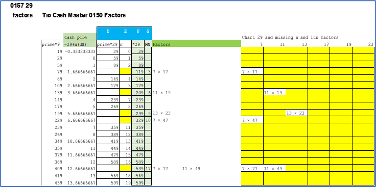
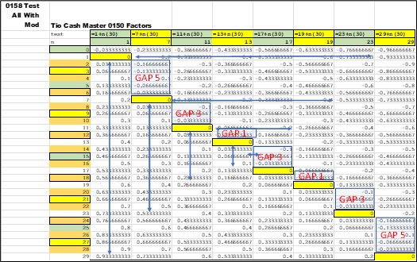
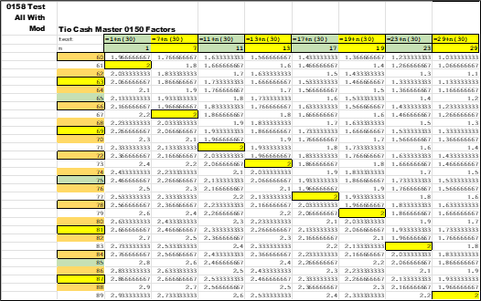

This first chart lists all the *1 *wildcard numbers. The formula to satisfy for *fam01 is [ 1 + n(30) ]. The columns in blue labeled as D , E , F, and G are joining the prime and non-prime. Columns D and E are the prime numbers that are a solution for *fam01. Columns F and G are the non-prime numbers for the solution for *fam01. To the right in the yellow panel are the factors for the non-prime numbers. They are placed in the column associated with their *fam. There is also a sub-sort within the green factors column. The smallest factor is listed first and the larger is after the multiplication symbol. Think of prepping the data for future sorts.
Later on , these factors will be grouped with the *fam value listed first.
In the
The importance this chart is column G the MN (missing number) is the PSL (Prime Suspect Level). The *fam01 has now sown together all *1 numbers (prime and non-prime) that satisfy *fam01 formula of:
PSL = 1 + n(30)
There are no gaps in counting numbers when n (column E) and MN (column G) are joined together. The numbers are listed sequentially.
Columns E (n) and G (MN - Missing Number) join primes and non-primes back together.
Here is the same chart for *fam07. That satisfy *fam07 formula of:
PSL = 7 + n(30)
Here is the same chart for *fam11. That satisfy *fam11 formula of:
PSL = 11 + n(30)
Here is the same chart for *fam13. That satisfy *fam13 formula of:
PSL = 13 + n(30)
Here is the same chart for *fam17. That satisfy *fam17 formula of:
PSL = 17 + n(30)
Here is the same chart for *fam19. That satisfy *fam19 formula of:
PSL = 19 + n(30)
Here is the same chart for *fam23. That satisfy *fam23 formula of:
PSL = 23 + n(30)
Here is the same chart for *fam29. That satisfy *fam29 formula of:
PSL = 29 + n(30)
Using the initial formula of:
PSL = (PS - *fam) / 30
Which can be converted to:
PSL = (PS - *fam) / 30
PSL(30) = PS - *fam
PSL(30) + *fam = PS
PS = *fam + PSL(30)
Using the last version of the formula gives data for several charts that are a continuation where:
PSL = n = 0 to 119
This charts the eight *fam against all numbers. It displays the solutions for each formula across the matrix. If it is an integer value , then it is the PSL. This is a curiosity view. It shows what is going on with the numbers , and does the formula work at all levels. The answer is yes , it is solid. The following four charts show the PSL grow from 0 to 3. Look at the yellow cells with a border and an integer value.
  next